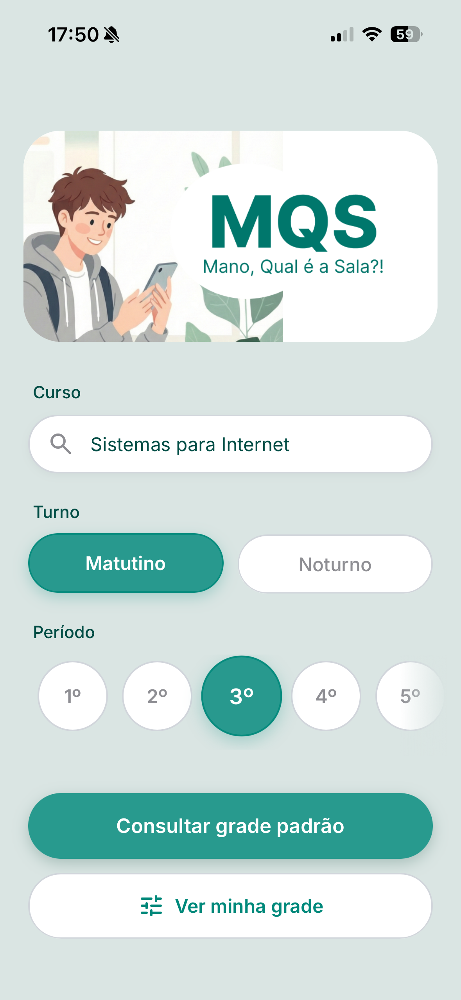
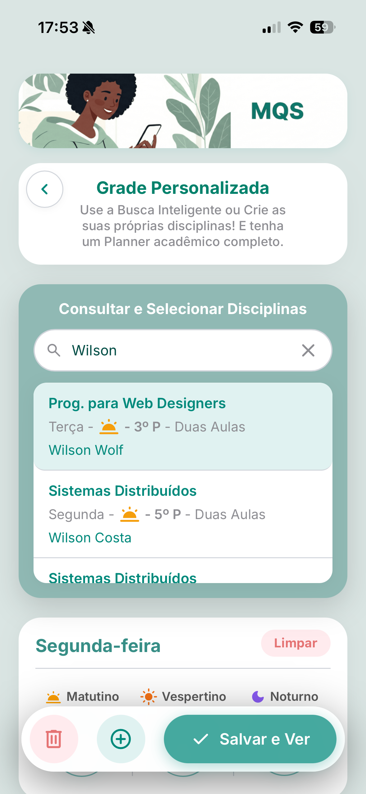
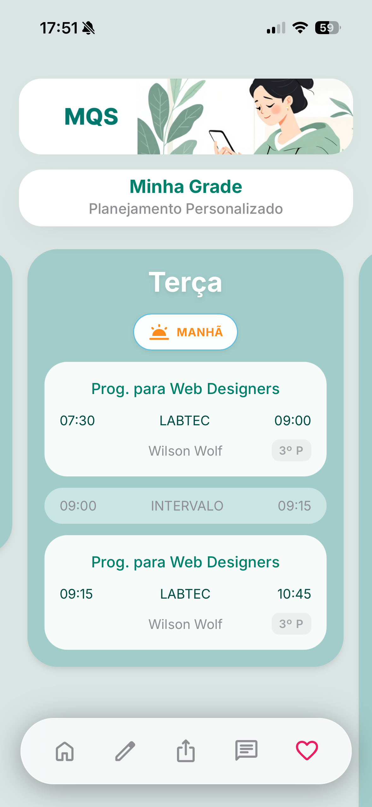

Acesso Rápido
Salve seus horários e locais favoritos no dispositivo para consultas offline instantâneas.

Eficiência e UX no Cotidiano Acadêmico. Projetado para ser um assistente ágil e intuitivo, eliminando a burocracia e simplificando o seu acesso às informações de salas de aula e horários do IFTO.
Portais acadêmicos frequentemente apresentam interfaces burocráticas e lentas. O MQS aplica a Lei de Hick para reduzir opções na tela, acelerando a tomada de decisões e diminuindo a sua carga cognitiva diária.
Tudo que você precisa, estruturado com HTML5 Semântico e Vanilla JS.
Salve seus horários e locais favoritos no dispositivo para consultas offline instantâneas.

Encontre rapidamente o local exato da sua aula através de filtros inteligentes por curso, período e turno.

Monte e visualize seu quadro de horários semanal de forma intuitiva, adaptada à sua rotina acadêmica.

A pergunta "Mano, Qual é a Sala?!" agora tem uma resposta definitiva e instantânea na palma da sua mão.
Acesse e use o MQS agora!